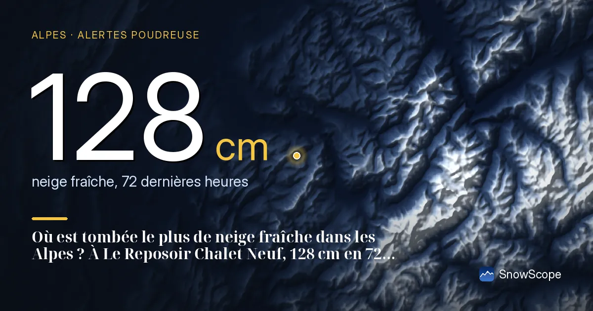
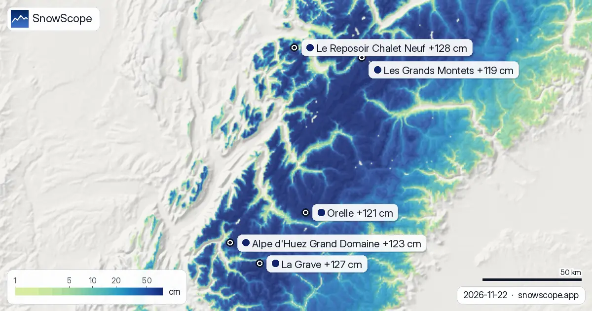
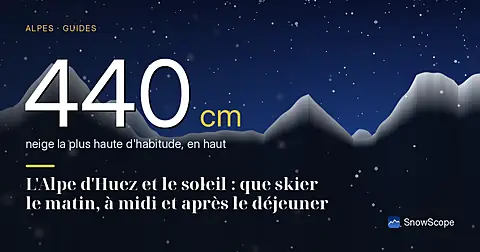

Où est tombée le plus de neige fraîche dans les Alpes ? À Le Reposoir Chalet Neuf, 128 cm en 72 heures (22 novembre)
Où est tombée le plus de neige fraîche dans les Alpes ? Neige fraîche à Le Reposoir Chalet Neuf : 128 cm en 72 heures, dont 88 cm sur les dernières 24. Notre modèle de neige place maintenant environ 42 cm sur le haut du domaine. Confiance : bonne pour la tendance, plus faible pour chaque chiffre pris seul.
Consultez les prévisions neige en temps réel pour Le Reposoir Chalet Neuf sur l'application SnowScopeHauteurs de neige, alertes poudreuse et carte 3D, gratuitement.
Les chiffres de la neige fraîche
Suivants sur la liste : La Grave, Alpe d'Huez Grand Domaine et Orelle, avec 127 cm, 123 cm et 121 cm en 72 heures.
108 680 km² de sol sont enneigés dans les Alpes aujourd'hui, et 1 104 stations sur 1 204 ont de la neige sur le haut du domaine.
| Station | Hauteur de neige | Neige fraîche, 72 h | Attendu, jours suivants | Sommet |
|---|---|---|---|---|
| Le Reposoir Chalet Neuf | 42 cm | 128 cm | 26 cm | 1 620 m |
| La Grave | 171 cm | 127 cm | 57 cm | 3 543 m |
| Alpe d'Huez Grand Domaine | 125 cm | 123 cm | 57 cm | 3 306 m |
| Orelle | 166 cm | 121 cm | 39 cm | 3 221 m |
| Les Grands Montets | 86 cm | 119 cm | 39 cm | 2 768 m |

La neige encore à venir
Jusqu'à 26 cm de neige fraîche sont prévus à Le Reposoir Chalet Neuf dans les prochains jours.
Les prévisions bougent : le moment est souvent plus fiable que les quantités, revérifiez deux jours avant de partir.
Vers 1 471 m, Le Reposoir Chalet Neuf a 8 cm aujourd'hui ; un 22 novembre normal y compte 16 cm.
C'est plus que lors de 9 des 46 hivers passés à cette date.
Les hivers passés, la meilleure neige à Le Reposoir Chalet Neuf arrivait d'habitude mi-février / mi-mars.
Jour après jour à Le Reposoir Chalet Neuf : dimanche 22 novembre 88 cm; lundi 23 novembre 16 cm; mercredi 25 novembre 10 cm.
Altitude par altitude à Le Reposoir Chalet Neuf : 1 323 m 8 cm au sol, 25 cm de plus dans les 7 prochains jours; 1 471 m 16 cm au sol, 39 cm de plus dans les 7 prochains jours; 1 620 m 24 cm au sol, 47 cm de plus dans les 7 prochains jours.
Contrôle des stations
Contrôle au sol, station Defreggerhaus (2 978 m) : 55 cm au sol le 21 novembre, 37 cm de neuve en 24 heures. La station de mesure Bourg-St-Pierre (1 668 m) ajoute une vraie mesure : 39 cm au sol le 20 novembre, 31 cm de neuve en 24 heures. Contrôle au sol, station Schapleralpa (2 354 m) : 49 cm au sol le 21 novembre, 30 cm de neuve en 24 heures.
Quelle confiance ? Les valeurs des stations de ski sont des estimations du modèle pour le haut du domaine ; les stations de mesure donnent des mesures, chacune en un point à la date indiquée.
La prévision en bref
D'ici le 25 novembre, la prévision donne 57 cm à La Grave, 57 cm à Alpe d'Huez Grand Domaine et 39 cm à Orelle, avec moins de certitude à mesure qu'on s'éloigne.
Les prévisions à quelques jours peuvent changer : regardez à nouveau la carte la veille du départ.
Par altitude et par pente
Trois altitudes à Le Reposoir Chalet Neuf, trois chiffres : 24 cm au sommet (1 620 m), 16 cm à mi-pente (1 471 m), 8 cm en bas (1 323 m).
Le 24 novembre, l'isotherme 0 °C à Le Reposoir Chalet Neuf se situe entre 870 m et 2 360 m, au-dessus du sommet de la station (1 620 m) : pluie ou neige mouillée sur toutes les pentes possible.
Risque d'avalanche et sécurité
Après une chute de neige, le vent forme des plaques sur les pentes abritées. En hors-piste, les premiers jours demandent le plus de prudence.
Conseils aux skieurs
- La meilleure poudreuse dure une matinée, pas une semaine. Partez tôt, avant le soleil et la foule.
- L'ombre protège le manteau neigeux. Les pentes nord en altitude reçoivent moins de soleil, leur neige dure plus longtemps qu'au sud.
- Avant le hors-piste ou la randonnée, lisez le bulletin d'avalanche officiel (liens ci-dessous).
- De la neige sur la carte ne veut pas dire que la station est ouverte : vérifiez remontées et dates d'ouverture sur son site.
- Activez une alerte poudreuse dans l'app SnowScope pour savoir quand Le Reposoir Chalet Neuf reçoit de la neige fraîche.
À propos de ces chiffres
Les hauteurs de neige des stations sont la neige la plus épaisse sur le haut du domaine, d'après le modèle de neige SnowScope (environ 1 km, calcul du 22 novembre) ; ce sont des estimations pour une zone, pas une mesure en un point. Les valeurs des stations de mesure sont mesurées à la date indiquée. Les prévisions peuvent changer. Consultez toujours le bulletin d'avalanche officiel avant le hors-piste.
Bulletins d'avalanche officiels: EAWS (Alps)
Citer ce bulletin
Pour la recherche, l'enseignement ou la presse : chiffres et graphiques réutilisables librement sous CC BY 4.0 avec cette citation.
SnowScope (2026), Où est tombée le plus de neige fraîche dans les Alpes ? À Le Reposoir Chalet Neuf, 128 cm en 72 heures (22 novembre), https://snowscope.app/blog/fr/2026/11/alps-le-reposoir-chalet-neuf-fresh-snow-powder-alert-22-november-2026.html, consulté le 2026-11-22
SnowScope (Atlas Labs). (2026, November 22). Où est tombée le plus de neige fraîche dans les Alpes ? À Le Reposoir Chalet Neuf, 128 cm en 72 heures (22 novembre). SnowScope snow reports. https://snowscope.app/blog/fr/2026/11/alps-le-reposoir-chalet-neuf-fresh-snow-powder-alert-22-november-2026.html
BibTeX
@misc{snowscope2026alpslereposoirchaletneuf,
author = {{SnowScope (Atlas Labs)}},
title = {Où est tombée le plus de neige fraîche dans les Alpes ? À Le Reposoir Chalet Neuf, 128 cm en 72 heures (22 novembre)},
year = {2026},
month = nov,
howpublished = {\url{https://snowscope.app/blog/fr/2026/11/alps-le-reposoir-chalet-neuf-fresh-snow-powder-alert-22-november-2026.html}},
note = {Published 2026-11-22 11:12 UTC; accessed 2026-11-22}
}· CC BY 4.0 · Méthodes, données et outils →
Suivre Le Reposoir Chalet Neuf
Gratuit : un message quand la neige arrive, et la météo chaque matin.
Autres bulletins neige

Alpe d'Huez vaut-elle le coup en décembre 2026 ? Nous vérifions les probabilités de neige, le prix de départ de 58,00 EUR et comparons avec Les 2 Alpes.

L'Alpe d'Huez fait face au soleil. Comment organiser sa journée selon l'heure et l'altitude, avec la neige de 46 hivers passés, des villages bas au Pic Blanc.

Prévision de 79 cm de neige nouvelle aux Grands Montets du 16–18 novembre, principalement au-dessus de 2 000 m d'altitude, selon le modèle de prévision du 15 novembre.